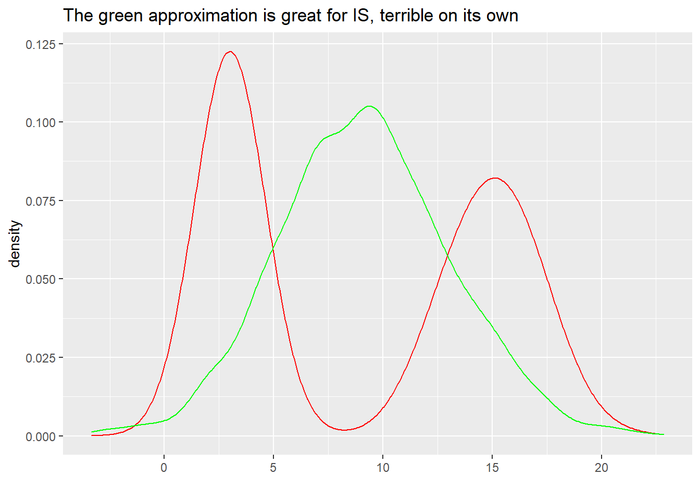
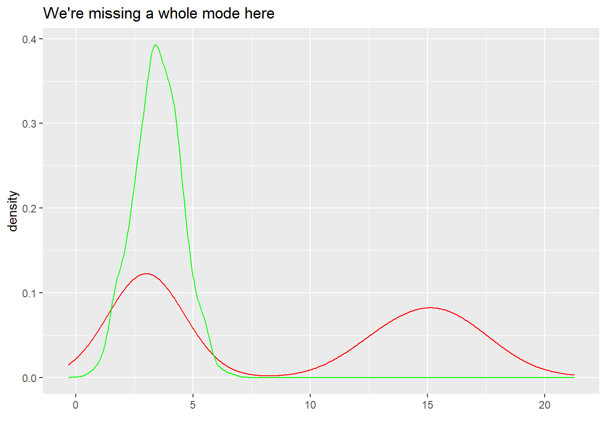

This is section 6 in my series on using Variational Inference to speed up relatively complex Bayesian models like Multilevel Regression and Poststratification without the approximation being of disastrously poor quality.
The general structure for this post and the posts around it will be to describe a problem with VI, and then describe how that problem can be fixed to some degree. Collectively, all the small improvements in these four posts will go a long way towards more robust variational inference. I’ll also have a grab bag at the end of other interesting ideas from the literature I think are cool, but maybe not as important or interesting to me as the 3 below.
In the last post we looked at normalizing flows, a way to leverage neural networks to learn significantly more expressive variational families in a way that adapt to specific problems.
In this post, we’ll explore different diagnostics for variational inference, ranging from simple statistics that are easy to calculate as we fit our approximation to solving the problem in parallel with MCMC to compare and contrast. Some recurring themes will be aiming to be precise about what constitutes failure under each diagnostic tool, and providing intuition building examples where each diagnostic will fail to do anything useful. While no single diagnostic provides strong guarantees of variational inference’s correctness on their own, taken together the tools in this post broaden our ability to know when our models fall short.
The rough plan for the series is as follows:
- Introducing the Problem- Why is VI useful, why VI can produce spherical cows
- How far does iteration on classic VI algorithms like mean-field and full-rank get us?
- Problem 1: KL-D prefers exclusive solutions; are there alternatives?
- Problem 2: Not all VI samples are of equal utility; can we weight them cleverly?
- Problem 3: How can we get deeply flexible variational approximations; are Normalizing Flows the answer?
- (This post) Problem 4: How can we know when VI is wrong? Are there useful error bounds?
- Putting the workflow all together
Looking at our loss function
One logical place to start with diagnostics is to discuss what we can and can’t infer from our optimization objectives like an ELBO or CUBO.
In training a model with variational inference some common stopping rule choices are either to just run optimization for a fixed number of iterations, or to stop when relative changes in the loss have slowed, indicating convergence of the optimization to a local minimum. So we can at least look at changes in the ELBO/CUBO/other loss to know if our approximation has hit a local minimum yet.
Unfortunately, that’s about all monitoring the loss can tell us. Recall that An unknown, multiplicative constant exists in p(z,x) \propto p(z|x) that changes as reparameterize our model; thus, we can’t compare two different models on the same objective and expect their ELBO or similar loss values to be comparable. So the typical ML strategy of “which model achieves lower loss” is pretty much out here.
Also, the loss values themselves aren’t particularly meaningful: there’s no way to interpret a given ELBO as indicating a good approximation, for example. This generally stems from our bounds being bounds, not directly optimizing the quantity we want to optimize. While they’re definitely degenerate cases, there are even some fun counter examples I’ll show in a second where you can make the ELBO/CUBO arbitrarily low, while still allowing the posterior mean or standard deviation to be arbitrarily wrong!
The majesty of \hat{k}
So if we can’t just look at our loss, what can we look at? One broadly applicable diagnostic tool is \hat{k}, which we already introduced in the post on using importance sampling to improve variational inference.
As a several sentence refresher, Pareto smoothed importance sampling (PSIS) proposes to stabilize importance ratios r(\theta) used in importance sampling by modeling the tail of the distribution as a generalized Pareto distribution:
\frac{1}{\sigma} \left(1 + k\frac{r - \tau}{\sigma} \right)^{-1/k-1} where \tau is a lower bound parameter, which in our case defines how many ratios from the tail we’ll actually model. \sigma is a scale parameter, and k is a unconstrained shape parameter.
To see how this provides a natural diagnostic for importance sampling, it’s useful to know that importance sampling depends on how many moments r(\theta) has- for example, if at least two moments exist, the vanilla IS estimator has finite variance (which is obviously required, but no guarantee of performance since it might be finite but massive). The GPD has k^{-1} finite fractional moments when k > 0. Vehtari et Al. (2015) show through extensive theoretical digging and simulations that PSIS works fantastically when \hat{k} < .5. and acceptably if .5 < \hat{k} < .7. Beyond \hat{k} = .7 there the number of samples needed rapidly become impractically large.
Why should we think \hat{k} is a relevant diagnostic for variational inference? Chaterjee and Draconis (2018) showed that for a given accuracy, how big S needs to be for importance sampling more broadly depends on how close q(x) is to p(x) in KL distance- we need to satisfy log(S) \geq \mathbb{E}_{\theta \sim q(x)}[r(\theta)log(r(\theta))] to get reasonable accuracy. So a good \hat{k} indicates importance sampling is feasible, which in tern indicates that q(x) is likely close to p(x) in KL Divergence- exactly what we’re hoping to get at!
Fleshing out the use of \hat{k} as a VI diagnostic was done by Yao et al. (2018), who generally show that high values of \hat{k} do generally map onto posterior approximations with variational inference being quite poor. This is really useful, and generally maps well on to my experience- if \hat{k} is bigger than .7, you probably need to go back to the drawing board on how you’re fitting your VI.
What I want to stress though, is that the inverse isn’t broadly true- a low \hat{k} isn’t necessarily a guarantee the VI approximation is good. Let’s look at a couple different ways this can happen.
Problem Case 1: Importance sampling \neq direct variational inference
We should keep in mind that \hat{k} is ultimately a diagnostic tool for importance sampling, and in cases where the needs of importance sampling and simple variational inference diverge, \hat{k} can give a misleading answer.
Let’s re-use an example from the importance sampling post to illustrate this. What happens if we approximate the red distribution below with the green one?
mixture %>% ggplot(aes(x = normals)) +
geom_density(aes(x = normals), color = "red") +
geom_density(aes(x = mean_seeking_kl), color = "green") + ggtitle("The green approxmiation is great for IS, terrible on it's own") +
xlab("")
The green distribution here is a prime candidate to importance sample to approximate the red one- it coves all the needed mass, and we can massively down weight the irrelevant points in the center. On the other hand, this’d be a really, really bad variational approximation to use raw, since it has a ton of mass between the two modes which will blow up our loss. Because the needs of PSIS-based estimators and unadjusted VI diverge, \hat{k} is low, but the approximation would be pretty bad:
importance_ratios <- tibble(
q_x = rnorm(200000,9,4),
p_x = c(rnorm(100000,3,1),rnorm(100000,15,2)),
ratios = (.5*(dnorm(q_x,3,1)) + .5*(dnorm(q_x,15,2)))/dnorm(q_x,9,4))
psis_result <- psis(log(importance_ratios$ratios),
r_eff = NA)
psis_result$diagnostics$pareto_k[1] -1.737515So our \hat{k} says everything is beautiful, but in reality it’s really only a happy time for PSIS, not the raw VI estimator. This ultimately isn’t the most concerning failure mode: if you do the work to calculate \hat{k}, you’re pretty much ready to use PSIS to improve your variational inference anyway. That said, this should provide intuition that \hat{k} isn’t in general super well equipped to tell you much about non-IS augmented VI.
Problem Case 2: \hat{k} is a local diagnostic
\hat{k} inherits a common issue with most KL Divergence adjacent metrics: it’s ultimately something we evaluate locally, so if there’s a part of the posterior totally unknown to our q(x), it won’t be able to tell you what you’re missing.
We already used 1 example from the importance sampling post, so let’s keep that moving. What do you think will happen with \hat{k} with the green approximation below that misses a whole mode?
mixture %>% ggplot(aes(x = normals)) +
geom_density(aes(x = normals), color = "red") +
geom_density(aes(x = mode_seeking_kl), color = "green") + ggtitle("We're missing a whole mode here") +
xlab("")
If you guessed \hat{k} will say everything is perfect when it’s not, you’re correct:
second_importance_ratios <- tibble(
q_x = rnorm(200000,3.5,1),
p_x = c(rnorm(100000,3,1),rnorm(100000,15,2)),
# Notice: these density calls are at the points defined by q(x)!
ratios = (.5*(dnorm(q_x,3,1)) + .5*(dnorm(q_x,15,2)))/dnorm(q_x,3.5,1))
psis_result_2 <- psis(log(second_importance_ratios$ratios),
r_eff = NA)
psis_result_2$diagnostics$pareto_k[1] 0.07343881That’s… not great. Since we evaluate the importance ratio and thus eventually \hat{k} at the collection of values in q(x), the diagnostic has no real way to know we’re missing an entire mode, and unlike in the above case there’s no easy fix here.
Another interesting question this example raises is what happens in high dimensions, where it’s much less intuitive what “missing one or several modes” looks like. Just by increasing the sd of the normal q(x) a little in the example, we see a sudden, large increase in \hat{k};
third_importance_ratios <- tibble(
q_x = rnorm(200000,3.5,2),
p_x = c(rnorm(100000,3,1),rnorm(100000,15,2)),
ratios = (.5*(dnorm(q_x,3,1)) + .5*(dnorm(q_x,15,2)))/dnorm(q_x,3.5,2))
psis_result_3 <- psis(log(third_importance_ratios$ratios),
r_eff = NA)Warning: Some Pareto k diagnostic values are too high. See help('pareto-k-diagnostic') for details.psis_result_3$diagnostics$pareto_k[1] 3.70381similar sudden shifts in \hat{k} can frequently occur as you increase the dimension of a posterior you’re approximating- intuitively, the mass you do and don’t know about becomes much harder to keep track of in high dimensions and for complex posteriors. This can lead to \hat{k} being a bit less stable than you’d like over different initializations or other slight modifications of a VI model, with this pattern being common both in my own applications and documented in several papers like Wang et al. (2023)’s testing.
Problem Case 3: \hat{k} is a joint posterior level tool
A final, more conceptual problem with \hat{k} that Yao et al. (2018) point out is that it’s ultimately a diagnostic of the joint posterior, not the specific marginal or summary statistic you may ultimately care about.
Variational inference is hard: we often know that the overall posterior approximation is deeply flawed, but it may be up to the task of representing some metrics we care about correctly enough. For example, in the MRP example I introduced earlier in the series, the mean-field variational inference fit was reasonable at representing the state-level means, but garbage at pretty much anything related to uncertainty. The \hat{k} from that model was greater than 2, so we clearly know the broader posterior approximation was poor, but \hat{k} might be a false positive sign if what you really care about was just the means. For the most complicated posteriors, we should expect to spend a lot of time in this feeling of “some parts of the posterior may be good enough”, so this is a useful trap to know about.
…Let’s step back for a second. Since I introduced PSIS with a bunch of cases where it falls short in surprising ways, I do want to emphasize it is a very useful heuristic diagnostic tool in general. Large \hat{k} tells you something is very likely wrong with your joint posterior, and that’s generally practically helpful information. Where we need to be cautious is in inferring whether the wrongness \hat{k} picks up on is something we care about, and also in remembering that low \hat{k} doesn’t provide gaurantees of correctness.
Wasserstein Bounds
MCMC based diagnostics; what’s old is new again
MCMC can be practically useful even when slow
TADDAA
Diagnostics that don’t spark joy
Reuse
Citation
@online{timm2023,
author = {Andy Timm},
title = {Variational {Inference} for {MRP} with {Reliable} {Posterior}
{Distributions}},
date = {2023-06-17},
url = {https://andytimm.github.io/variational_mrp_pt6.html},
langid = {en}
}